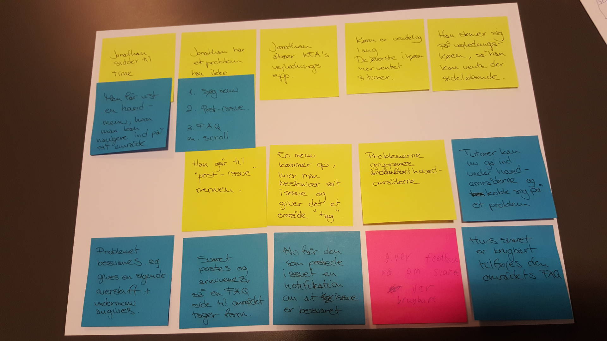

-
Jacob Kristensen
-

Laura Amalie
-

Sidsel Mathilde
-

Martin Knuth
-
Rasmus Merhøj
Trello-board
Scrum video
Burn-down chart
#burndownchart
Experience Map

Interview
IP – Anonym Medstuderende
- Hvorfor valgte du kea?
- Ville gerne lave noget mere grafisk og få det på papir
- Hvad er dine spidskompetencer inden for mmd?
- Design og animation, (AE) noget man reelt kommer til at bruge.
- Hvad er du ikke så stærk i inden for mmd¿
- UX og indsamling af data og salg af produkt.
- Hvis du kunne ændre én ting på kea, hvad ville det så være? (og hvorfor?)
- Bedre struktur, af undervisning tid osv.
- Nævn 3 ting som kunne gøres bedre i kantinen
- Pris, billigere kaffe, menu (ved ikke hvor den findes)
- Nævn 3 ting som kunne gøres bedre i forhold til skemaet
- Fuckfronter (et reelt skema, man ikke skal tilgå fra fronter, struktur)
- Nævn 3 ting som kunne gøres undervisningen bedre og mere struktureret
- Snak mere sammen (underviserne) bedre vejledning, forkert prioritering af tid (bla andet at man underviser hele dagen, og så smider en opgave på)
- Hvad synes du kea mangler?
- Har mange ressourcer, men mangler noget, der samler det
- Hvad kunne man gøre for at forbedre det?
- Ingen anelse
- Hvad er det bedste ved kea?
- Kantinen, der er et godt miljø. folk engagerer sig.
- Hvad er den mest uduelige app?
- En app om peter ulf (med uduelige informationer) (Ulfen Peter)
Persona
- Navn: Jonathan
- Alder: 22 år
- Køn: Mand
- Bopæl: Vesterbro - bor til leje
Beskrivelse:
Jonathan er en ung fyr på 22 år, som studerer MMD på KEA. Han elsker at være social og deltager tit i de sociale arrangementer, som KEA tilbyder. Han lider tit af fomo, hvis han ikke kan deltage og har derfor svært ved at sige nej til en god fest.
Han er en kreativ sjæl, som er vild med at tegne. Hans primære interesse er indenfor markedsføring og branding. Han har søgt ind på MMD, for at gøre karriere indenfor reklamebranchen. Jonathan er en middel-ambitiøs studerende - han ønsker ikke at studiet skal fylde for meget, så han ikke har tid til sine venner. Omvendt oplever han udfordringer omkring at studiet er for high-paced. Han føler derfor til tider ikke at han kan følge med. Dertil føler han også ofte, at han mister overblikket i informationsstrømmene på studiet. Han savner en måde, hvorpå man kan skabe et overblik i kaos.
Udover han interesser indenfor markedsføring og branding, er Jonathan også en stor madentusiast og livsnyder. Når han hænger ud med sine venner, nyder han derfor at lade mad være omdrejningspunktet. Hans gutter har en mandeloge, hvor de mødes en gang om måneden - enten ude eller hos hinanden, hvor værten står for menuen. Han er altid frisk på at eksperimentere i køkkenet. Jonathan har derfor også visse standarder, for hvad han har lyst til at spise. Det skal være sundt, men vigtigst af alt; det skal smage af noget. Jonathan føler sig ofte uinspireret over udvalget af omkringliggende spisesteder i nær radius af KEA. Han synes hverken at de lever op til hans præferencer eller pengepung. Dette har resulteret i at han som ofte vælger at planlægge og forberede sin frokost hjemmefra. Han går dog lidt og drømmer om en kantineordning, som var til at betale og som tilbød et varieret og omskifteligt udvalg.
Nettet er en naturlig del af hans hverdag. Han benytter det som redskab til at kommunikere med venner, underholdning, uddannelse, job og informationssøgning. Dette sker på tværs af forskellige platforme - primært computer og smartphone.
Idé 1 – KEANTINEN
Pain Point
Udvalget i KEA’s kantine møder ikke de studerendes behov eller rådighedsbeløb.
Experience Map

Skitse

Storyboard

Usability test
Idé Grundlag
- Tilbyder:
- Oprettelse af bruger:
- Navn
- Studienummer/mail
- Alder
- Køn
- Kortoplysninger - linket til mobilepay
- Præferencer
- Oversigt over ugens menu
-
Loyalitetsprogram:
- Point system
- Efter loyalitet baseret på købshistorik
- Efter aktivitet i forbindelse med:
- Afstemninger
- Feedback på oplevelsen af det købte måltid
- Valuecards
-
Medbestemmelse fra brugergruppen
- De studerendes maddag
- Ugentlig afstemning om kommende uges menu
- Early bird tilbud til dem, som bestiller inden kl. X eller de 10/20 første
-
Pushmeddelelser:
- “Maden er klar”
- “Godmorgen - i dag serveres ….”
- “Er I ved at være sultne? Kom ned i kantinen og nyd …. med os”
- Oprettelse af bruger:
Brugssituationer:
- Når man tager afsted om morgenen
- Når man begynder at blive sulten inden frokosttid
Konceptvalidering
Hvem er målgruppen?
- Kvantificer størrelsen på målgruppen - kan den skaleres op?
Målgruppen for KEAntine app’en er på nuværende tidspunkt målrettet studerende på KEA Lygten 16. Fremadrettet ville man kunne videreudvikle appen, så den også kunne benyttes på de resterende KEA.
Forstår målgruppen vores løsning?
- (gennem vores tests)
Testpersonen forstod appens formål. Appen var meget simpel og lige til. Der var dog lidt forvirring omkring menupunktet “Se point”. Først skulle testpersonen lige forstå hele konceptet med point, hvad det drejede sig om og hvordan det fungerede. Da testpersonen klikkede sig ind på punktet forstod han princippet i at man kunne bruge nogen optjente point til at købe ting i kantinen, men der var dog igen lidt forvirring, denne gang over en proces bar, som testpersonen ikke helt kunne tyde hvad var.
Punktet feedtback skabte også forvirring, hvad skal man give feedback på? Savner priser på appen.
Hvilken værdi vil løsningen give virksomheden?
Hvis man lavede en app til KEAs kantine, vil det blive nemmere for de studerende at holde sig opdateret på dagens ret. De studerende vil via appen kunne deltage i afstemninger og dermed have indflydelse på retterne, som vil gøre at kantinen tilpasses de studerenes behov. Dette vil nok betyde at flere studerende til gøre brug af kantinen og Simply Cooking vil dermed nå ud til flere og opnå et større salg.
Hvis flere studerende benyttede kantinen vil flere studerende samles og der vil dermed skabe et bedre fællesskab. Et bedre fællesskab vil betyde at de sociale vil blive stærkere på KEA, hvilket vil være med til at skabe et godt ry for KEA.
Hvilken værdi giver den målgruppen?
- Spørg dem eksempelvis “hvad ville du give for det”
Appen ville for det første have til formål at hjælpe de studerende på KEA. Den vil være med til at give dem et overblik over maden i kantinen og gøre det nemmere for de studerende at benytte kantinen. Men den vil også hjælpe selve kantinen, ved at skabe et nemt overblik over maden for de studerende og gøre det hele nemmere, vil det nok også øget salget af mad i kantinen.
Via appen vil de studerende få mere indflydelse og det bliver nemmere for kantinen til tilfredsstille de studerende. Menuen vil blive mere målrettet til de studerendes behov, da de vil have mulighed for at deltage i afstemningen om dagensret. Derudover vil et point system i appen kunne bidrage på det økonomiske, bare små ting, som at kunne få hver 10 kop kaffe gratis vil vil få stor betydning for de fleste studerende.
Kan udviklingen lade sig gøre? Eller er vi afhængige af teknologi, der ikke er moden endnu?
- Prøv at kvantificere (budget)
Udviklingen af appen ville sagtens kunne lade sig gøre med nuværende teknologi. Der er tale om at skulle designe og programmer en simpel og enkel app, som på nuværende tidspunkt skulle kunne benyttes af de studerende på KEA lygten 16.
Udfordringen ville være samarbejdet med kantinen. Det ville kræve nogen ændringer i forhold hvordan kantinen fungere i dag. Det ville kræve nogen mere faste priser i kantinen og en form for klippekort. Samtidig vil det kræve at dem i kantinen er villig til at få opdateret appen fast hver morgen og får sendt en del beskeder ud.
Inden for hvilken tidshorisont kan det realiseres?
Da kantinen allerede findes og fungere findes alt man skal bruge til at lave appen allerede. Dette betyder at det egentlig kun er produktionstiden som der skal tages højde for, så et par måneder.
Har andre allerede realiseret en tilsvarende løsning?
Da KEAs kantine ikke har nogen app i forvejen er der ikke nogen direkte konkurrenter. Hvis man lavede en app til KEAs kantine vil det være den eneste app de studerende ville kunne benytte sig af når de ville tjekke ugens menu osv.
Idé 2 – Gitgudhub
Pain point
De studerende på KEA kan til tider føle sig fortabte i situationer efter de skemalagte timer, hvis en udfordring opstår og underviserne er gået. De studerende er frustrerede over den nuværende systematisering af vejledning, som er karakteriseret ved uendelig lang ventetid.
Experience Map

Skitse
Storyboard
Usability test
Konceptvalidering
Hvem er målgruppen?
- Kvantificer størrelsen på målgruppen - kan den skaleres op?
Studerende på MMD. Som udgangspunkt er produktet meget specifikt til denne målgruppe og kan derfor ikke skaleres op. Hvis opskalering er en prioritet, kan app’en udvides til at omfatte flere studieretninger og fakulteter, dette vil dog kræve udvidelse af app’en. Dette kan også foregå i form af opdateringer.
Forstår målgruppen vores løsning?
Under test af en tidlig prototype, var der forvirring omkring app’ens formål. Med videre udvikling af produktet, med særligt fokus på at designe en mere brugervenlig interface, vil målgruppen i højere grad forstå løsningen.
Hvilken værdi vil løsningen give virksomheden?
Indledningsvis vil løsningen være et værktøj for de studerende, der kan hjælpe i deres studie. Hensigten er at dette skal være med til at aflaste underviserne, øge tilfredsheden og højne det faglige niveau blandt de studerende. Dette vil i den lange ende gøre studiet mere attraktivt for nye studerende.
Hvilken værdi giver den målgruppen?
App’en er et værktøj målgruppen kan bruge til at give og modtage hjælp til løsning af faglige udfordring. Udover det konkrete værktøj kan løsningen have en mulig bivirkning at der skabes en større fællesskabsfølelse når de studerende overkommer udfordringer i fællesskab.
Kan udviklingen lade sig gøre?
Produktet er muligt at løse med nuværende teknologi. Med en fuldt udviklet app til Lygten 16 og MMD uddannelsen, kan den med relativ lethed udvides til andre fakulteter og uddannelser.
Inden for hvilken tidshorisont kan det realiseres?
Højst sandsynligt inden for et par måneder. Funktionerne i app’ indeholder en forholdsvis simpel mappe og undermappestruktur samt en vejledningskø, som allerede eksisterer. Selvom det er udfordrende at give et konkret bud på en tidshorisont, er dette ikke et over-ambitiøst projekt og kan derfor realiseres relativt hurtigt.
Har andre allerede realiseret en tilsvarende løsning?
Som sådan er der ikke andre lignende produkter, men der er en udfordring i at målgruppen kan finde på at bruge andre platforme til at kommunikere med hinanden angående lignende issues - eksempelvis facebookgrupper o.lign. En stor del af app’ens success afhænger af om målgruppen finder dens brug for besværlig sammenlignet med de ad hoc løsninger de benytter sig af på nuværende tidspunkt.
Derudover findes der mange substituerende løsninger, hvor studerende kan finde hjælp til specifikke problemer, i form af w3schools, stackoverflow, lynda osv. En årsag til at der ikke findes lignende app’s kan være fordi, den fysiske handling det er at finde sin smartphone frem bliver vurderet til at være for upraktisk, hvis man i forvejen sidder foran sin computer.
Idé 3 – Kea Intern
Pain point
De studerende på KEA føler at praktik-søgningen er en uoverskuelig proces og savner et værktøj, hvormed man kan få vejledning til at planlægge sin praktiksøgning step by step og få et overblik over mulige praktiksteder.
Experience Map

Skitse

Usability test
Konceptvalidering
KEA intern’s formål er at give de studerende et redskab, hvormed man kan sænke kompleksitetsniveauet omkring praktiksøgningsprocessen. Dette gøres ved at give de studerende en platform, hvor de kan få overblik over og rådgivning til alle dele af praktiksøgningsprocessen, få overblik over udbuddet og søge med få klik. Ideen er at hver enkelt studerende opretter sig og udfærdiger et personligt visitkort, der kort karakteriserer vedkommende med al formel information, der er påkrævet i en ansøgningsproces samt angiver deres interesser og kompetencer. KEA intern tilbyder så følgende undermenuer: Opslagstavlen - et overblik over aktuelle praktikstillinger, Guides - en samling af relevante guides, som kan rådgive og hjælpe den studerende til at optimere sin praktiksøgnings-proces samt Virksomhedsdatabasen - et komplet overblik over mulige praktikvirksomheder.
Hvem er målgruppen?
På nuværende tidspunkt er applikationen KEA intern målrettet studerende på KEA’s campus’er fordelt over København. Applikationens koncept og formål ville med god sandsynlighed kunne skaleres op på en større målgruppe, der omfatter samtlige af landets uddannelsesinstitutioner, som har praktik som en integreret del af deres uddannelser, hvor praktiksøgningen er fortrinsvist en selvstændig proces.
Derudover kunne man forestille sig en udvidelse af app’en, hvor man aktivt inddrager potentielle praktik-virksomheder, således at app-løsningen også fungerede som redskab til virksomheder, der søger praktikanter. På denne måde vil app’en få en tovejs networking-dimension, hvor aspirerende praktikanter og virksomheder, kan få overblik over udbuddet og skabe kontakt med få klik.
Forstår målgruppen vores løsning?
Testpersonen i usability-testen var begejstret for KEA intern’s koncept og forstod at app’ens formål, er at agere hjælpe-værktøj for studerende i processen omkring praktiksøgning. Hun fandt de forskellige menupunkter relevante og værdiskabende for hendes fremtidige praktiksøgnings-proces.
Hvilken værdi vil løsningen give virksomheden?
Værdien KEA intern kan skabe for KEA som virksomhed, er primært at sænke usikkerheden, der hersker blandt de studerende, når det gælder praktiksøgnings-processen. Dette vil bidrage til at øge trivslen blandt de studerende og dermed sænke frafald, som har sin begrundelse i manglende overblik og struktur, og den forbundne fortvivlelse og stress.
Ligeledes er ideen at der skabes en platform, som vejlederne ligeledes kan tilgå, hvor de kan få et overblik over de studerende, de assisterer i processen, booke vejledningsmøder og allerede inden første møde, kan forberede sig på vejledningsprocessen af den enkelte studerende.
Derudover kan man argumentere for at KEA har potentiale til at opnå bedre branding blandet deres samarbejdspartnere ved, at kvaliteten af ansøgningerne og forberedelsen af de studerende til deres fremtidige praktik bliver bedre.
Hvis man udvider app’ens horisont til at indbefatte en dimension for praktik-virksomhederne, hvor de kan tilgå sitet og udvælge attraktive kandidater, vil dette ydermere bidrage til KEA’s branding i erhvervslivet og fordre et tættere samarbejde.
Hvilken værdi giver den målgruppen?
KEA intern skaber værdi for målgruppen i og med at der skabes et redskab omkring praktiksøgnings-processen, som kan hjælpe de studerende til at danne sig et overblik over processen, søge råd og vejledning dertil og holde sig opdateret med det aktuelle udbud samt overskueliggøre udvalget og mulighederne ift. valg af praktiksted.
Dette redskab vil bidrage til, at de studerende oplever, at processen omkring praktiksøgning bliver mere overskuelig og at de samtidig bliver mere selvhjulpne, dygtigere og mere effektive til at søge praktik. Dette betyder i sidste ende at trivslen blandt eleverne påvirkes i positiv retning, da processen omkring praktiksøgning simplificeres, smidiggøres og effektiviseres.
Kan udviklingen lade sig gøre?
Applikationen kan sagtens skabes og implementeres med den nuværende teknologi.
Meget af den fornødne data, som applikationen benytter sig af er data, som KEA allerede har tilgængeligt på deres website og via KEA’s jobportal.
Udfordringerne som implementering af KEA intern står overfor, begrænser sig derfor til udvikling af kodningen for app’ens interface og udvikling af content til Guide-sektionen. Her vil der være forbundet omkostninger til fornøden arbejdskraft.
Inden for hvilken tidshorisont kan det realiseres?
Det estimeres at app’ens implementering vil tage omkring 4-6 uger med udvikling af content og interface samt beta-testing på produktet.
Har andre allerede realiseret en tilsvarende løsning?
Man kan argumentere for, at der forefindes substituerende delløsninger på nogle af app’ens funktioner. Et utal af udbydere - eksempelvis uddannelsesguiden, fagforeninger, privatejede konsulentvirksomheder, jobcentre og studievejledninger - udbyder dele af den rådgivende funktion i KEA intern. Når det gælder videreformidlingen af praktikopslag, kan man opdele konkurrenterne i 2 grupper:
- Facebookgrupper - ofte målrettet efter erhverv eller branche
- Websites - eksempelvis herunder praktik.dk, praktikpladsen.dk, graduateland.com, ofir.dk, jobindex.dk etc.
Sidst, når det gælder praktik-håndtering, findes der en landsdækkende platform, som agerer bindeled mellem uddannelsesinstitution, virksomheder og den studerende på De Danske Professionshøjskoler; Praktikportalen. Praktikportalen udbyder en løsning, hvor virksomhederne selv opretter praktikopslag direkte i portalen og efter et simpelt, prioriteret valg fra en liste af virksomheder sendes den studerendes ansøgning afsted. Derfra fordeler Praktikportalen de studerende ud på de udbudte virksomheder. Denne service er bygget på et solidt fundament af faste samarbejdsaftaler, hvor fordelingen af praktikpladser ikke er baseret på faglig kunnen, men snarere de studerendes prioritering og derefter en semi-vilkårlig fordeling.
Argumentet er her, at en praktiksøgnings-proces på et uddannelsessted som KEA er langt mere komplekst og selvstændigt i sin form i dag end det er tilfældet på De Danske Professionshøjskoler.
På det nuværende marked for apps er der endnu ikke udviklet denne type integrerede løsning, når det gælder praktiksøgning, som KEA intern tilbyder. Med KEA intern tilbydes både en personlig profil, som præsenterer den studerendes ansigt udadtil for virksomhederne og giver den studerende et overblik over kommende praktikperioder og møder med vejleder, guides til hele praktiksøgnings-processen, en komplet liste over KEA’s samarbejdspartnere, en opslagstavle med aktuelle praktikopslag samt en funktion som linker den studerende med relevante praktikopslag baseret på deres personlige profil.
Flere delelementer udbydes af forskellige udbydere på kryds og tværs, men argumentet er her, at dette er en skræddersyet løsning, specifikt designet til uddannelsessteder med en mere kompleks proces, når det kommer til praktiksøgning.
Valg af idé
Benchmark
| Målgruppens størrelse | Målgruppens skalerbarhed | Værdien for virksomheden | Værdien for målgruppen | Realiserbarhed | Konkurrence | Total | |||||||
| Vægtning | Score | Vægtning | Score | Vægtning | Score | Vægtning | Score | Vægtning | Score | Vægtning | Score | ||
| KEANTINEN | 0,2 | 3 | 0,4 | 2 | 0,5 | 1 | 1 | 2 | 0,8 | 1 | 0,5 | 2 | 5,7 |
| Gitgudhub | 0,2 | 1 | 0,4 | 1 | 0,5 | 2 | 1 | 3 | 0,8 | 3 | 0,5 | 1 | 7,5 |
| KEA intern | 0,2 | 3 | 0,4 | 3 | 0,5 | 3 | 1 | 2 | 0,8 | 2 | 0,5 | 3 | 8,4 |
Argumentation
Resultatet af en benchmarking af de tre idéer blev, at KEA intern vandt med en score på 8,4. Idéen havde højeste score i 4 ud af 6 kategorier: Målgruppens størrelse, skalerbarhed, værdi for virksomheden og konkurrence.
KEA intern er en holistisk løsning, som med få midler og indenfor en overskuelig tidsramme kan skabe overblik og struktur, og dermed forenkle processen omkring praktiksøgning.
De fleste af ressourcerne der kræves til app'ens udvikling og implementering er tilgængelige allerede, hvilket gør den let-realiserbar for virksomheden.
KEA intern har derudover gode muligheder for en skalering af målgruppen, så den indbefatter samtlige af KEA's studieretninger, vejledere og samarbejdspartnere. Derudover kunne man forestille sig, at denne app kunne skaleres op på et landsdækkende plan, så den omfatter lignende uddannelser med praktik som en integreret del og en tilsvarende selvstændig praktiksøgnings-proces.
Det unikke ved denne idé er især, at en simpel app kan omstrukturere logistikken og skabe værdi på tværs af tre brugergrupper; studerende, vejledere og praktikvirksomheder.
App'ens værdi for de studerende er, at de bliver udstyret med et holistisk redskab, som hjælper med at danne et overblik over processen, søge råd og vejledning dertil og holde sig opdateret med det aktuelle udbud samt overskueliggøre udvalget og mulighederne ift. valg af praktiksted. Alt er samlet ét sted. På denne måde vil de studerende opleve en mere overskuelig praktiksøgningsproces samtidig med at de bliver mere selvhjulpne, dygtigere og mere effektive til at søge praktik. Dette betyder i sidste ende, at trivslen blandt de studerende påvirkes i positiv retning, da processen omkring praktiksøgning simplificeres, smidiggøres og effektiviseres.
App'ens værdi for KEA tager sit udgangspunkt i værdien for de studerende, der som bi-produkt vil have en effekt på tilfredshedsundersøgelser, frafaldsprocenten og KEA's branding i de studerendes bevidsthed, men også i omverdens bevidsthed i takt med at KEA bliver synonym med stærke og velforberedte praktik-kandidater.
Udvidelsen af KEA interns interface, så det bliver en platform, som også vejledere kan tilgå, vil ligeledes gøre deres oplevelse af processen mere simpel, smidig og effektiv, hvilket også vil give positivt udslag i en tilfredshedsundersøgelse.
Sidst men ikke mindst vil den aktive inddragelse af potentielle praktikvirksomheder bidrage til KEA's branding i erhvervslivet, fordre et tættere samarbejde samt bane vejen for nye.
Pitch
Processen omkring at søge praktik kan være kilde til frustration og fortvivlelse for både vejledere og studerende. Den fornødne informationsindsamling er spredt udover flere forskellige platforme og processen er meget selvkørende for de studerende.
Derfor ønsker vi:
At skabe en samlet og skræddersyet løsning til praktiksøgning, som skal agere bindeled mellem studerende, virksomheder og vejledere.
KEA intern’s formål er at tilbyde et skræddersyet redskab, hvormed man kan sænke kompleksitetsniveauet omkring praktiksøgningsprocessen. Det gøres ved at give de studerende en platform, hvor de kan få overblik over og rådgivning til alle dele af praktiksøgnings-processen, få overblik over udbuddet og søge med få klik.
Hver enkelt studerende opretter sig og udfærdiger et personligt visitkort, der kort karakteriserer vedkommende med al formel information, der er påkrævet i en ansøgningsproces samt angiver deres interesser og kompetencer.
Det personlige visitkort fungerer således som den studerendes ansigt udadtil overfor potentielle praktik-virksomheder. Derudover fungerer den personlige profil, som et værktøj, der gør at den studerende nemt kan skabe sig overblik over sin ansøgningsproces;
Man kan uploade og administrere CV, motiverede ansøgninger, se information om kommende praktikperioder, tilknyttede vejledere og vejledningsmøder samt løbende holde sig opdateret på aktuelle praktikopslag, der matcher den studerendes personlige profil.
Derudover tilbyder KEA intern følgende undermenuer i sin interface:
- Opslagstavlen - et overblik over aktuelle praktikstillinger.
- Guides - en samling af relevante guides, som kan rådgive og hjælpe den studerende til at optimere sin praktiksøgnings-proces, samt
- Virksomhedsdatabasen - et komplet overblik over mulige praktikvirksomheder.
Udover at være en løsning, som søger at give KEA’s studerende værktøjerne til at blive mere selvhjulpne, effektive og skarpere i deres ansøgningsproces og branding af sig selv, er visionen som nævnt, at denne app skal agere bindeled mellem de tre involverede parter i praktiksøgnings-processen; studerende, vejleder og virksomhed.
Således vil alle tre parter kunne tilgå app’en og nemt med få klik indhente al relevant information og skabe sig overblik; Vejledere vil kunne danne sig overblik over den vifte af studerende, de skal være vejledere for, booke og administrere møder og følge den studerendes ansøgningsproces via den personlige profil.
Praktikvirksomheder vil kunne poste praktikopslag, som løbende matches med kvalificerede studerende, hvilket gør det muligt for virksomhederne proaktivt at finde den rette kandidat til deres praktikstilling.
Med KEA intern får KEA et unikt og skræddersyet værktøj til gavn for alle parter i praktiksøgnings-processen, som ikke alene smidiggør, effektiviserer og skaber overblik over processen fra start til slut, men også skaber rammerne for at det optimale praktikmatch opnås og at KEA bliver synonym med de stærkeste praktik-kandidater på markedet.
Styletile
Visuel identitet
Den visuelle identitet for KEA intern er udviklet med udgangspunkt i stilarten Flat Design, som er karakteriseret ved en todimensionel, minimalistisk stil med få og simple elementer, der med primært fokus på farve og typografi som virkemiddel, søger at maksimerer brugervenligheden i UI'en.
Valget af stilart har bl.a. sin begrundelse i sine klare fordele, når det kommer til at skabe en overskuelig og brugervenlig interface til mobilen. Her drages nytte af den minimalistiske æstetik, der aktivt hjælper brugeren med at identificere og navigere sin vej rundt i interfacen ved hjælp af de tydeligt definerede og simple menuer og ikoner.
Derudover harmonerer Flat Design godt med KEA's egen æstetik, som defineret i KEA's designmanual, hvor stilen er minimalistisk med fokus på en sprudlende farvepalette med tema-indelte monokrome farvepaletter, simple former og enkel, men effektfuld sans-serif typografi.
For at ramme KEA's æstetiske signalværdi tager valget af farvepalette og typografi sit udgangspunkt i KEA's designmanual. I stil med KEA's egen æstetik er farvepaletten derfor monokrom og udviklet med udgangspunkt i KEA's røde signaturfarve. For yderligere at understrege referencerne til KEA's æstetik er typografien Helvetica Neue Condensed Bold valgt.
Valget af grafiske former til logo, ikoner og knapper følger ligeledes linjen fra Flat Design, hvor fokus er holdt på ellipser og rundede rektangler for et stringent udtryk.
Designet af grafikken til logo og menu-ikonerne er udviklet med stor vægt på konventionel-signalværdi, således at grafikken er nem at afkode for brugeren. Der er bevidst udelukkende arbejdet med hvid outline og uden for meget detaljerigdom, for netop at understrege den minimalistiske æstetik.
Den grafiske opsætningen af interfacen har fokus på symmetri, balance og en klar fornemmelse af hierarki, som ligeledes skal guide brugerens forståelse og interaktion. I denne forbindelse er der både arbejdet med størrelses- og farvekontraster, som medvirker til at skabe hierarki og dybde. Derudover er placeringen af elementerne arrangeret med tanke på Loven om nærhed - der sikrer at nærliggende elementer opleves som samhørige, Loven om lukkethed - der fremhæver og definerer hovedmenu'en, samt Loven om lighed - der er brugt i udviklingen af de grafiske former, for at opnå et letgenkendeligt udtryk, for hver elements funktion. Udseendet på app'ens baggrund er udviklet efter rule-of-thirds, der giver det enkle udtryk et simpelt twist og understreger farvepaletten.
Usability test af KEA intern
2. test